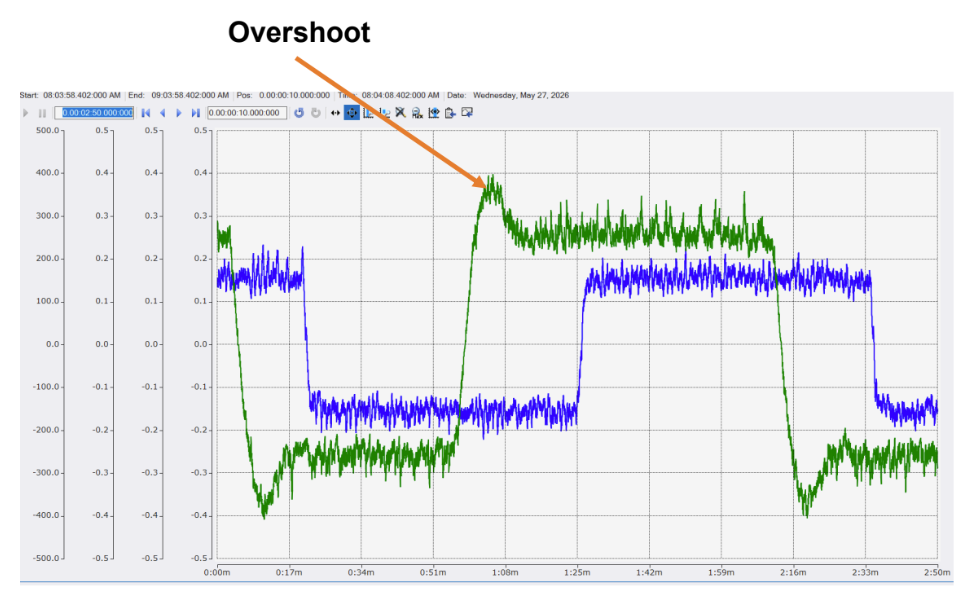

Random Positioning Machine
High accuracy testing rig designed to simulate a reduced gravity environment for particles in solution.

Varda is an ambitious company that aims to bring materials manfactured in space back to Earth. This is achieved through a hypersonic reentry capsule that reenters the atmosphere at Mach 25+, and makes a smooth landing in the desert. Past Varda payloads have mostly been sensors and pharmaceuticals. My project focuses on the latter. I designed a random positionig machine (RPM), a two-axis gimbaling mechanism that simulates microgravity through the process of gravity vector averaging. Basically, if you spin an object at the right speed, the object may experience a reduced gravity environment. This is meaningful for Varda because it can be used as a screener for pharmaceuticals that exhibit favorable characteristics in microgravity (larger crystals, even structure, etc.), and act as a quasistatic reference for drugs made in space. Specifically, if a drug creates the same polymorph in the RPM as in true microgravity (i.e. in the capsule sent to space), the effects are likely achieved by other factors such as reduced sedimentation which can be achieved on Earth.
This design works by spinning two perpendicular frames using BLDC motors. Each motor is programmed to spin independently of the other, which is important for achieving true random motion. In reality however, the motors are somewhat coupled due to the effects of gravity and the heavy rotating mass. The motors are controlled using a Beckhoff Embedded PC (CX5340) running TwinCAT/BSD, which controls a coupler (EK1200), digital output (EL2008), IMU and motor driver (EK1100). Power and signal are transmitted through a series of sliprings, each containing a single 10A circuit at 48V (motors draw 4.6A nominally), and an ethernet connection for EtherCAT comms. The power is distributed through a terminal block to the input poles on the driver, and a buck converter that steps the voltage down to 24V for the coupler and connected cards. Yes, you heard that right... The cards are on the rotating frame! This decision was driven by the availability of cheap and low leadtime sliprings and scalability of the system (i.e. adding new sensors is easy since it requires no additional circuits through the slipring). However, it also added many challenges since the rotating cards made the system unbalanced. When the time came to tune the motors, I ran into a ton of issues trying to find the correct P and I gains for the PID controller.
In the end, I was able to achieve around a 14x reduction in the time averaged gravity vector. Although this does not qualify as true microgravity, it does provide some useful data for steps moving forward.
Loading slides…

